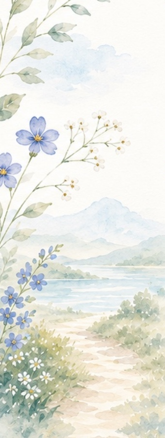
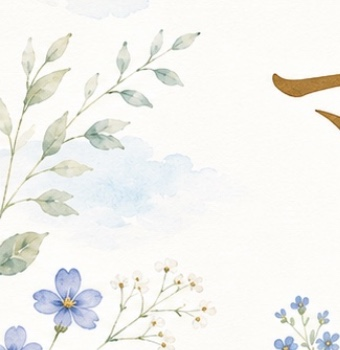
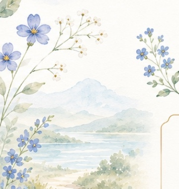
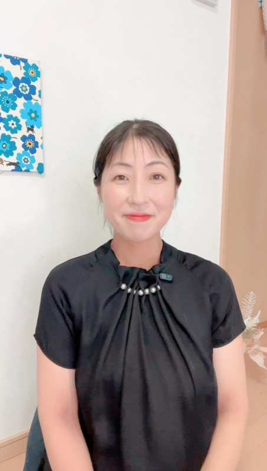

診断だけでは、たどりつけない
診断で出た結果を、公認心理師と話しながら
「本当にそうか」を見きわめる60分です。
お支払いはPayPal（クレジットカードOK）
CHECK
ひとつでも当てはまったら、この先を読んでみてください。
あなたのせいじゃないかもしれません。
WHY
23問の診断で出るのは、あくまで傾向です。
人は無意識に、「こうありたい自分」で答えてしまいます。
これは意志が弱いとかではなくて、もう、そういうものなんです。
実際にあった話をひとつ。
診断では タイプ1（w2） と出た方が、
話していくうちに タイプ9（w1） だとわかったことがあります。
※ご本人の許可をいただいて掲載しています
1と9では、しんどくなる場面も、効く声かけも、まるで違います。
ずれたまま対策すると、当然、効きません。
合わない「がんばり方」を、
まじめに続けることになる。
学んでも変われなかったのは、あなたの努力が足りなかったからじゃなくて、
そもそも地図がずれていた、ということがあるんです。
HOW
やることは、そんなに複雑じゃありません。
あなたの過去の場面を、一緒にたどっていくだけです。
これは、個別セッションを350回以上重ねるなかで、ずっとやってきたことです。
自分では「性格」だと思っていたものが、実は仕組みだった。
そこが見えると、打つ手が変わります。
CONTENT
診断結果は「たたき台」として使います。まだ受けていなくても大丈夫。その場で見ていきます。
子育て・夫婦・仕事・人間関係。困っている場面をひとつ持ってきてください。性格の問題ではなく、仕組みとしてほどいていきます。
たくさんは決めません。ひとつだけです。「知って終わり」にしないための、いちばん大事なところ。
FOR YOU
申し込みフォームは1分で終わります
AFTER
「私はダメだ」ではなく、
「私は、こう扱えばうまくいくんだ」へ。
性格を直そうとしなくていいんです。
扱い方さえわかれば、同じ性格のまま、明日がちょっとだけラクになります。
自分を責める時間が減って、その分を、大事な人に使えるようになる。
ここまで読んでくださったあなたに、
そういう顔で帰ってほしくて、この60分を作りました。
FLOW
・お顔出しなしでも大丈夫です
・話がまとまっていなくて大丈夫。まとまらないまま持ってきてください
・静かに話せる場所と、イヤホンがあると聞きやすいです
PROFILE

さっちゃん
公認心理師 ｜ 3児の母
心の国家資格である公認心理師です。個別セッションは350回以上、特別支援教育の現場では10年以上、子どもと家族に向き合ってきました。
私自身も、3人の子どもを育てるママです。
正しい方法を探し続けるより、自分に合ったがんばり方を知るほうが、ずっと早くラクになれる。それを、あなたの毎日で一緒に確かめていきます。
Q & A
PRICE
エニアグラムセッション
7,700円（税込）
60分／オンライン（Zoom）
お支払いはPayPal（クレジットカードOK）
お支払いの確認をもって、ご予約が確定します
前日までの日程変更は無料です
NEXT
この60分でやるのは、タイプを見きわめて、明日の一歩を決めるところまでです。
「家族のことも含めて、じっくり整えたい」
そう思ったときのために、3ヶ月の個別プログラムも用意しています。
ただ、まずはこの60分で十分です。
こちらから無理におすすめすることはありませんので、安心して来てくださいね。
60分あれば、地図は引き直せます。
まとまらないまま、来てください。
空いている時間がその場でわかります